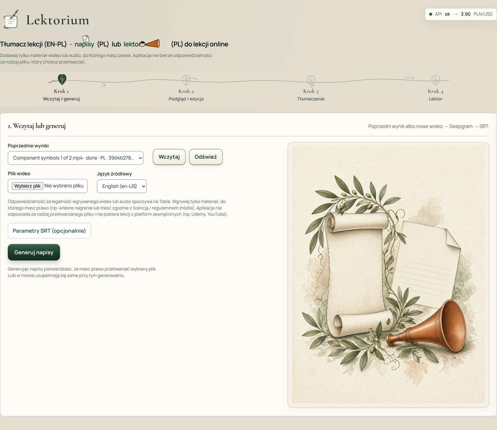
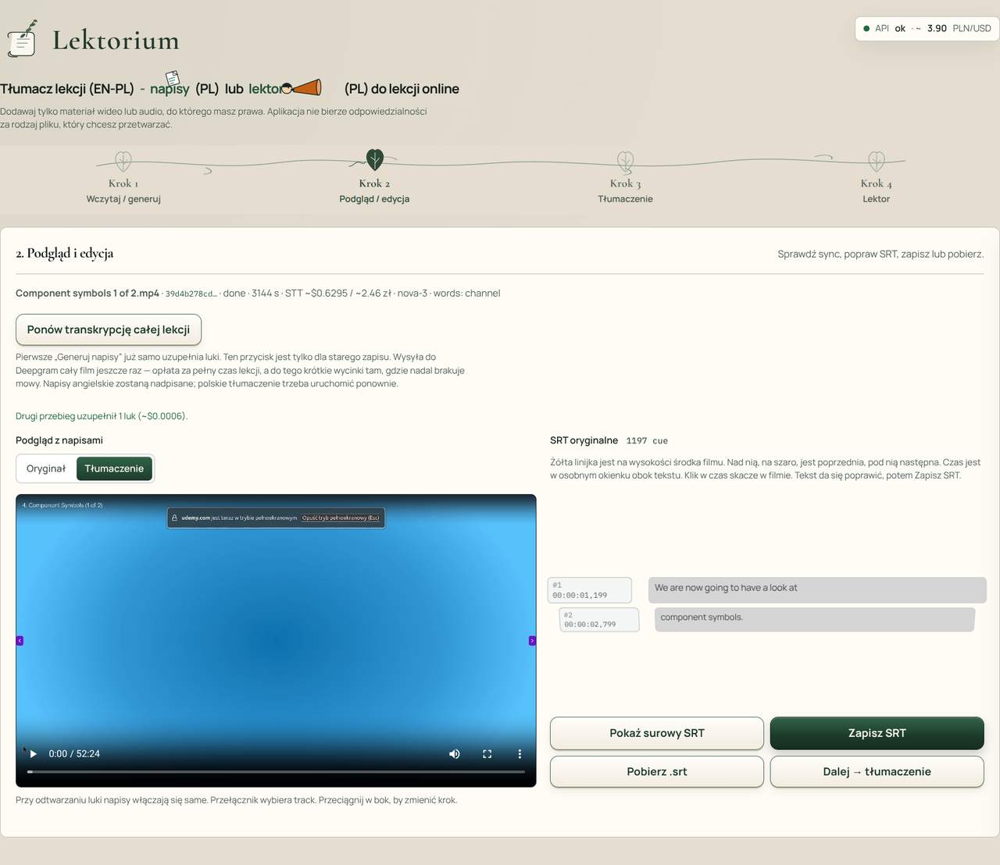
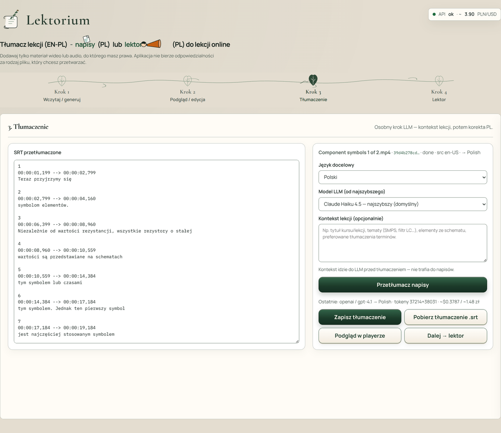
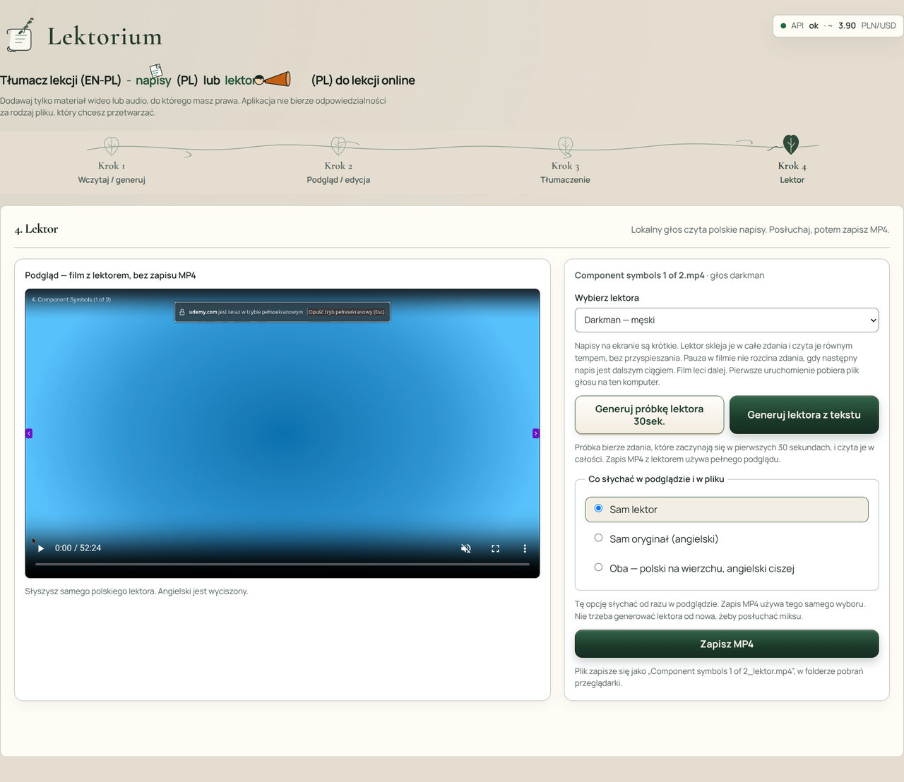

Lektorium
Lokalna aplikacja, która z angielskiej lekcji online robi polskie napisy albo głos lektora.
Po co powstał
Lekcja nagrana po angielsku jest cenna, dopóki da się w niej zostać. Lektorium ma jedno zadanie: zostać przy treści. Z filmu, do którego masz prawo, powstają polskie napisy, a potem — jeśli chcesz — głos, który czyta je w rytmie lekcji.
To narzędzie do nauki, nie do ściągania kursów z internetu. Materiał wgrywasz sam. Każdy kolejny krok zaczyna się dopiero wtedy, gdy o niego poprosisz: najpierw napisy, potem tłumaczenie, na końcu lektor.
Co zyskujesz
- Lekcja po polsku — czytasz napisy albo słuchasz lektora, zamiast co chwilę zatrzymywać film przy słowniku.
- Cztery krótkie etapy — wczytanie, podgląd, tłumaczenie, lektor. Nic nie przeskakuje dalej samo.
- Poprawka zanim poleci głos — zdanie da się zmienić, zanim lektor je przeczyta.
- Trzy sposoby słuchania — sam lektor, sam oryginał albo oba naraz, z polskim na wierzchu.
- Film zostaje u Ciebie — zapis trafia do folderu pobrań na Twoim komputerze.
Jak wygląda praca w aplikacji
Krótkie opisy pod kolejnymi etapami, które użytkownik przechodzi na co dzień.

Wczytanie — wrzucasz lekcję, do której masz prawa, albo wracasz do wcześniejszej i prosisz o napisy.
Podgląd — oglądasz film z napisami, poprawiasz zdanie i dopiero wtedy idziesz do tłumaczenia.
Tłumaczenie — po lewej polski tekst, po prawej prośba o przekład. Możesz dopisać, o czym jest lekcja.
Lektor — wybierasz głos, słuchasz próbki albo całości i zapisujesz film: sam lektor, sam oryginał, albo oba.Stos technologiczny
Dla osób zainteresowanych „jak to jest zrobione” — skrót na dole strony.
| Warstwa | Technologie |
|---|---|
| Gdzie działa | Lokalnie na komputerze użytkownika, w przeglądarce. Nie jest to usługa w internecie, na którą zakładasz konto. |
| Ekran | React, TypeScript, Vite |
| Silnik | Python, FastAPI (katalog backend/, środowisko backend/.venv) |
| Mowa → napisy | Deepgram, model nova-3. Płatna usługa w chmurze: liczy się czas nagrania. Plik wideo zostaje na tym komputerze, do usługi idzie ścieżka dźwiękowa. |
| Tłumaczenie | Osobny, płatny krok. Domyślnie Claude Haiku 4.5; da się przełączyć na inne modele Claude i GPT. Do prośby można dołączyć krótki opis lekcji (temat, terminy). |
| Lektor | Lokalnie, na procesorze: Piper. Głosy Darkman (męski, domyślny) i Gosia (żeński). Czyta całe zdania, równym tempem. Jeśli zdanie jest dłuższe niż okienko napisu, następna linia czeka. |
| Słuchanie i zapis | Trzy tryby: sam lektor (oryginał wyciszony), sam oryginał, oba (polski normalnie, angielski ciszej). Zapis wideo składa ffmpeg. Nazwa pliku z lektorem: {nazwa lekcji}_lektor.mp4, w folderze pobrań przeglądarki. |
| Napisy | SRT. Podgląd przy filmie i ręczna poprawka przed tłumaczeniem i przed lektorem. |
| Start | ./dev.sh albo npm run dev |
Strona portfolio · Robert Bąk · Lektorium (PL) · 2026